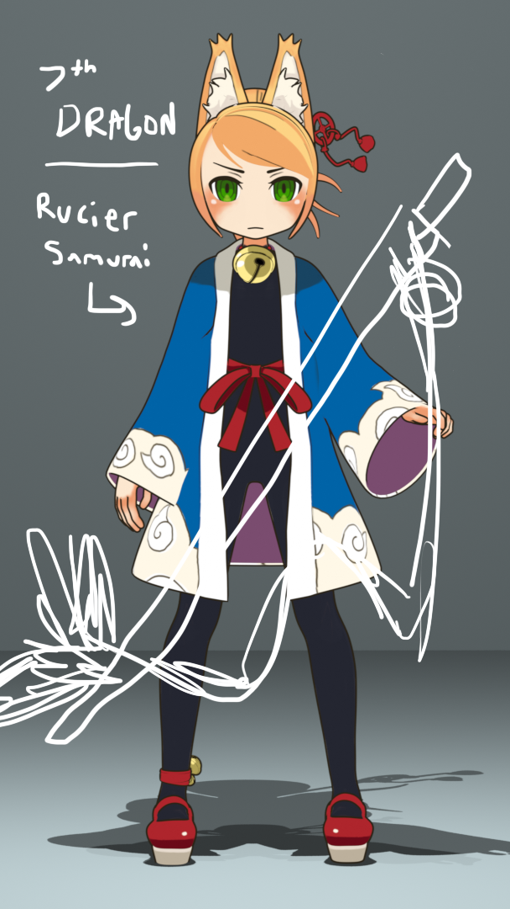

Page last updated: 11/19/2026

I started this during Fall Break, Sophomore year of college? I think this was one of those "Now that I have time, I am going to do an amazing and huge project (but then proceed to never finish it)" lol
She's actually supposed to have a sword (I hope this is obvious from the doodle), but I lost steam. I decided that it looked decent enough to be considered "finished" and left it there.
To be honest, it's been such a long time that I don't really have much to say about this model. I think this was one of my better, earlier attempt at anime-style models. I've improved since then, but I still think this one is pretty cool (also because I really like the character design).
EXTRA:
For those who know the 7th Dragon series, I still think it's kind of wacky that female Rucier are cat girls (but I dunno, this one kind of looks like a fox lol), and male Rucier are elf boys. Which is like peak fan-service. Which I unironically am into... 🤣
If you haven't played the game, this is 7th Dragon on the Nintendo DS. You would need to download a fan-translation of the game (I forget from where, but you can go look it up). There's also a patch of the game that lowers the encounter rate, which is apparently notoriously bad, which maybe you should also download if you want to play the game.
UNDER CONSTRUCTION...